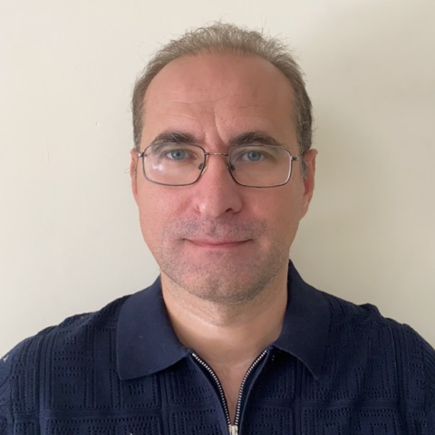

Serge Rabyking
Open silicon, built new in the open: imaging hardware from NumPy models, raw sensor transport over HDMI, and one engine for the file formats every EDA tool re-implements.
Building
Background
Thirty-plus years of software coupled tightly to hardware — image processing, embedded systems, telephony, hardware products. Twelve years at Apical (acquired by Arm) working on image signal processing IP that shipped in production cameras — patent US10063787B2. At Apical I also built an image-pipeline compiler turning graphical models into C.
Doctoral research in logic optimisation (SAT) at Loughborough University; applied mathematics at MIPT. Founded and ran a hardware product company (2017–2023), designing and manufacturing its electronics and firmware. Merged upstream patches in open EDA tools.
Working with me
Consulting — ISP bring-up, imaging pipelines, EDA tooling — and sponsorship that funds named capability targets: the work lands open, with your name on the release.
Sponsor serge@rabyking.com